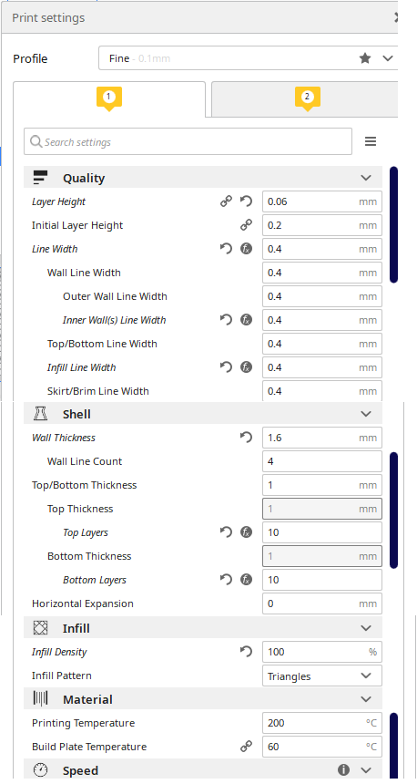
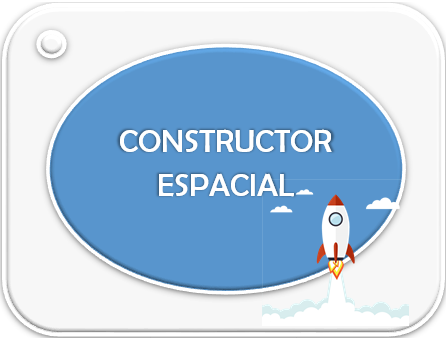

Ya llegó el momento de poner en marcha todo lo aprendido hasta el momento. Realizando el diseño y fabricación de nuestro edificio.
Ya llegó el momento de poner en marcha todo lo aprendido hasta el momento. Realizando el diseño y fabricación de nuestro edificio.
Junto con todos los grupos de la clase crearéis la ciudad espacial de vacaciones.
Vamos al lío.
Ya llegó el momento de poner en marcha todo lo aprendido hasta el momento. Realizando el diseño y fabricación de nuestro edificio.
Junto con todos los grupos de la clase crearéis la ciudad espacial de vacaciones.
Vamos al lío.
En parejas, debes realizar un diagrama de bloques con todo el proceso de diseño y construcción de tu edificio.
Ha llegado el momento de realizar el diseño definitivo de vuestro edificio espacial para ello seguid los siguientes pasos:
Debes tener cuidado con el diseño para su posterior impresión. Dale un diseño futurista recuerda queremos que los turistas vengan al espacio.
En este enlace tienes diseños de campamentos Lunares del desafío MoonCamp de Esero.
Una vez has diseñado e impreso los edificios. Tienes que diseñar otros elementos de la ciudad como pueden ser. Cada grupo debe elegir uno:
Ya habeis diseñado vuestro edificio, ahora toca la construcción del mismo. Para ello sigue estos pasos:
Si necesitas ayuda, en esta imagen tienes un ejemplo de configuración.

Una vez que has impreso tu edificio y tus compañeros también, debéis colocarlos junto con otros materiales, objetos (Cohetes, astronautas,...) dándole un verdadero aspecto de ciudad de vacaciones.
Vuestro profesor puede compartir el trabajo realizado por la clase en redes sociales corporativas para darles visibilidad.
¿Te ha parecido interesante la construcción de la ciudad? Recuerda que, como en otras actividades, si necesitas ayuda para cualquier tarea puedes preguntar a tus compañeras y compañeros o al profe.
Algunas cosas nos resultan complicadas, pero hay compañeras o compañeros a los que les puede resultar muy sencillo. Depende de lo que cada uno domine la tarea, lo que sepa y de sus propias habilidades.
Cuando unimos las habilidades de todas las personas, aprendemos juntos y somos capaces de resolver cualquier desafío.
¡Sigue adelante compartiendo este reto!
Tras tener nuestro edificio y ciudad construída es necesario que evaluemos definitivamente las condiciones que debe cumplir nuestra ciudad para ser habitable.
Vamos a ello.
Debes realizar un informe con tu compañero que incluya los siguientes apartados.
¿Has podido realizar todas las partes de nuestro reto?
Cuando terminamos una actividad es bueno reflexionar sobre las propias habilidades, recursos y experiencias.
Por ello, comenta con tus compañeros y compañeras todo lo que has aprendido, tus propias habilidades, los recursos que has utilizado.
También cuéntales cuáles qué es lo que se te ha dado mejor y los problemas que has encontrado.
Todo esto te ayudará a aprender sobre cómo afrontas este tipo de actividades y a hacerlo mejor la próxima vez.
¿Qué has sentido realizando el trabajo de los futuros constructores espaciales?
Una actividad de clase puede hacernos sentir de muchas maneras: confundido, aliviada, inseguro, tensa, alegre, orgullosa, enfadado…
La forma en la que respondes ante una actividad puede decirte muchas cosas sobre ti.
Si te sientes confundido o insegura, es porque se trata de una actividad nueva que no sabes muy bien cómo resolver.
Si te sientes contenta, alegre u orgulloso, seguramente es porque sabes que serás capaz de hacerla muy bien.
Si te sientes enfadada o tenso, es porque esa actividad es muy difícil o muy importante.
Conocer las emociones que sientes cuando vas a hacer una actividad te ayudará a:
¡Haz caso a tus emociones!
Al superar todo el reto y construir tu edificio para la futura ciudad de vacaciones espacial. Aquí tienes tu insignia.

Obra publicada con Licencia Creative Commons Reconocimiento Compartir igual 4.0